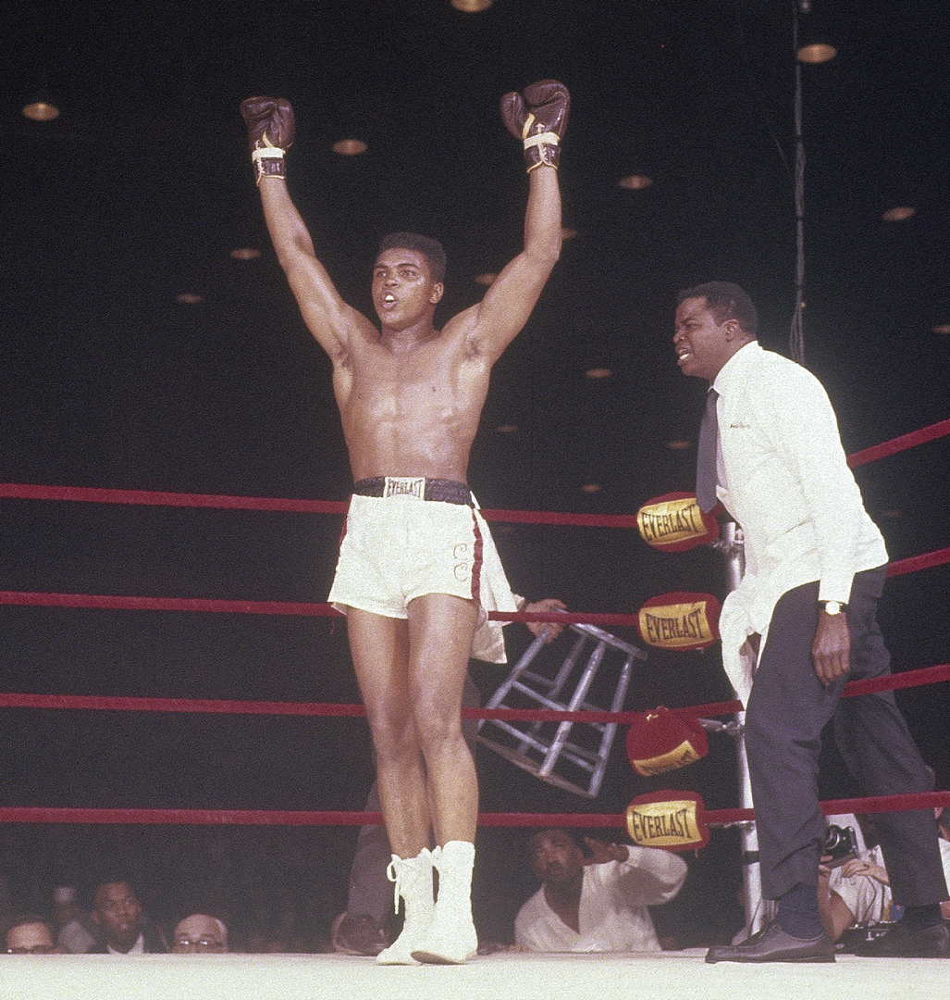
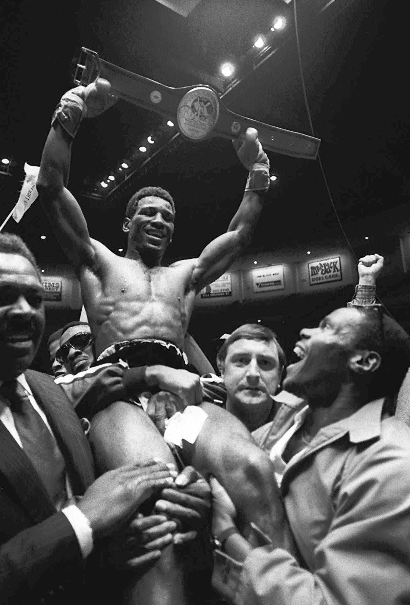

Das Erste Mal Champion!
Hier sind Bilder dieser drei Kämpfer, wie sie zum ersten Mal Weltmeister wurden!

MUHAMMAD ALI

MATTHEW SAAD MUHAMMAD

Die auf dieser Seite aufgelisteten Kämpfer sind meiner Meinung
nach die herrausragendsten Kämpfer aller Zeiten und meine persönlichen Favoriten.
Sie haben sich durch ihre Leistungen und ihre Hingabe an den Sport ausgezeichnet.
Dies sind die 3 Kämpfer, welche meiner Meinung nach noch eine besondere Nennung verdient haben!
The GREATEST OF ALL TIME!
Der dreifache Schwergewichtsweltmeister und Olympia Goldmedalist!
Trotzdessen er mit 5 Jahren im Benjamin Franklin Parkway ausgesetzt wurde kämpfte er sich bis zum Boxweltmeister hoch!
Aus den Favelas in Brasilien, mit einer sehr bewegenden Geschichte, bis zum UFC-Champion!
Hier sind Bilder dieser drei Kämpfer, wie sie zum ersten Mal Weltmeister wurden!
Hier zu sehen sind ein paar Bilder aus ihren spannendsten Kämpfen!
Muhammad Ali und Joe Frazier lieferten sich einen epischen Kampf im Boxring, der als "Fight of the Century" bekannt wurde. In einem mitreißenden Duell zweier Schwergewichtslegenden setzte sich Frazier durch, indem er Ali in einem intensiven und historischen Gefecht besiegte. Ihr erstes Aufeinandertreffen wird als ein unvergessliches Kapitel in der Geschichte des Boxsports verankert bleiben.
Yaqui Lopez und Matthew Saad Muhammad lieferten sich eine epische Schlacht im Ring, geprägt von beeindruckender Technik und unerschütterlichem Willen. In einem denkwürdigen Moment gelang es Muhammad, mit einem entscheidenden Treffer zu siegen und die Herzen der Zuschauer zu erobern. Ihr Duell wird als ein unvergessliches Kapitel in der Geschichte des Boxsports eingraviert bleiben.
Charles Oliveira und Justin Gaethje traten in einem mit Spannung erwarteten Duell im Octagon an. Die beiden Kämpfer zeigten beeindruckende Fähigkeiten und Entschlossenheit, doch Oliveira setzte sich letztendlich durch, indem er Gaethje besiegte und sich den Sieg sicherte. Ihr Aufeinandertreffen wird als ein denkwürdiger Moment in der Welt des Mixed Martial Arts in Erinnerung bleiben.